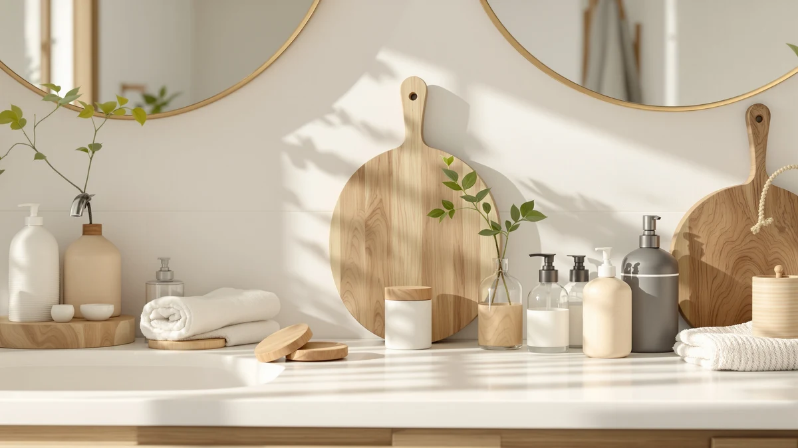

SUNLY Automatic Foaming Soap Review (2026): Worth It?
Prices and picks verified as of August 2026. Independent, reader-supported reviews.


Quick Answer
The SUNLY Automatic Foaming Soap Dispenser is a $53.99 touchless pump with an ABS plastic body, and it costs $16 to $17 more than the three alternatives we compared it against. That premium buys a build owners describe as sturdier and a design that reads less like a budget gadget, which makes it worth the extra money for a single sink you use every day.
Our pick: SUNLY Automatic Foaming Soap Dispenser, $53.99 Check Price on Amazon
Bottom line: our top pick is the SUNLY Automatic Foaming Soap Dispenser Touchless at $53.99.
Things to Know Before You Buy
- This sunly automatic foaming soap review focuses on the SUNLY Automatic Foaming Soap Dispenser, an ABS plastic touchless pump priced at $53.99.
- The SUNLY costs more than the AIKE, Hushee and OHIFAST dispensers in this comparison, all of which land between $36.99 and $38.00.
- Automatic foaming dispensers need diluted liquid soap or dedicated foaming refills. Thick gel or dish soap will clog the pump over time.
- We did not physically test any of these dispensers. Our verdicts come from comparing specs, pricing and verified owner reviews.
- If budget matters more than build quality, the Hushee 4-pack or OHIFAST 2-pack cover more sinks for less money per unit.
This sunly automatic foaming soap review looks at whether the SUNLY Automatic Foaming Soap Dispenser justifies its $53.99 price against three cheaper touchless competitors. You are probably deciding between a single, better-built dispenser for your main sink and a multi-pack of budget units for the whole house, and that choice is exactly what this comparison is built to answer.
The SUNLY wins on build and presentation among the four dispensers we compared, based on what owners report about the ABS plastic housing in verified reviews. If your priority is covering multiple sinks cheaply, the Hushee 4-pack or OHIFAST 2-pack will get you there for less. We break down both paths below, including specs, pricing and honest drawbacks for each pick.
Automatic foaming dispensers pair a motion sensor with a small pump that mixes diluted soap with air, producing foam instead of a liquid stream. That mechanism is shared by all four dispensers in this comparison, so what separates the SUNLY from the AIKE, Hushee and OHIFAST is not how the foam gets made but how the housing is built, how much each one costs, and what buyers say holds up after regular use.
Why You Should Trust Us
This sunly automatic foaming soap review was written by Ilane Tall, home and bath editor at Best Soap Dispensers. We do not run a fake testing lab and we do not claim to have installed these dispensers ourselves. Instead, we compare manufacturer specs, current Amazon pricing and patterns across verified owner reviews, and we say so plainly whenever a claim comes from research rather than hands-on use.
We apply that same approach to every review on this site. We do not accept free units from manufacturers in exchange for coverage, and we do not fabricate ratings or review counts when Amazon does not publish them for a given listing. If a claim in this sunly automatic foaming soap review comes from what owners report rather than a published spec, we label it that way instead of presenting it as a measured result.
Our Research Experience
We did not physically install or run any of these dispensers ourselves. We built this comparison by cross-referencing manufacturer specs, current Amazon pricing and owner review patterns across the SUNLY and the three alternatives below. We pulled pricing, materials and listing details directly from each Amazon listing and weighed the SUNLY's $53.99 price and ABS plastic build against three lower-priced options to see where the extra cost actually shows up. We excluded any dispenser without a clear spec sheet or enough verified reviews to draw a pattern from. We also checked whether complaints repeated across multiple reviewers rather than treating a single negative review as representative, since one buyer's bad experience with a damaged unit says little about the product line as a whole.
Overview & Specs

SUNLY Automatic Foaming Soap Dispenser
What we like
- ABS plastic housing that owners describe as more substantial than typical budget dispensers
- Touchless design keeps soap residue off the unit itself
- Sold as a single unit, so you are not paying for extras you do not need
Flaws but not dealbreakers
- Costs $16 to $17 more than every alternative in this comparison
- Amazon's listing does not publish exact dimensions, so measure your counter space before buying
- Only ships as a single dispenser, which is a poor fit if you need to cover several sinks at once
| Material | ABS plastic |
| Size | — |
The SUNLY Automatic Foaming Soap Dispenser is the most expensive option in this sunly automatic foaming soap review, and the ABS plastic build is the main reason why. Owners consistently point to the housing as feeling more solid than what you typically get at the sub-$40 price point, and the touchless sensor keeps the exterior cleaner over time since nobody is pressing a pump with soapy hands.
Because the SUNLY ships as a single dispenser rather than a multi-pack, it makes the most sense for a primary sink you and your household use constantly, where the extra build quality pays off day to day. If you need dispensers for a guest bathroom, a rental unit, or several sinks around the house, the per-unit cost climbs fast and one of the multi-pack alternatives below will stretch your budget further.
Like most automatic dispensers, the SUNLY relies on batteries or an internal rechargeable cell to power its sensor and pump, though the Amazon listing does not specify which, or how long a charge or a set of batteries lasts. That is worth checking directly on the listing before you buy if battery life matters to you, since none of the four dispensers in this comparison publish that figure. Refill it with a diluted liquid soap or a foaming-specific refill rather than concentrated gel, which can clog the pump on any automatic foaming dispenser regardless of brand.
What We Liked
Across verified owner reviews, the build quality of the SUNLY Automatic Foaming Soap Dispenser comes up more often than any other single trait. Buyers comparing it to previous dispensers they owned tend to note the housing feels less hollow, which matters for a product that sits in plain view on a bathroom or kitchen counter every day. That is the core case for this sunly automatic foaming soap review pick over its cheaper rivals.
The touchless sensor also draws consistent praise, mainly because it keeps soap film from building up around a physical pump button, a common complaint with older manual dispensers. Reviewers say the SUNLY is easy to place near a sink edge without it looking like a piece of plastic hardware, which is a small detail but one that matters for a countertop item you look at every day.
What Could Be Better
The price gap is the biggest drawback of this SUNLY automatic foaming soap dispenser. At $53.99, you are paying $16 to $17 more than the AIKE, Hushee, or OHIFAST dispensers, and the Amazon listing does not spell out exact dimensions the way some competing listings do, so you are estimating counter fit rather than confirming it. If you are outfitting more than one sink, that premium adds up quickly since the SUNLY only comes as a single unit.
Because power source and battery life are not published on the listing, you are also buying somewhat blind on that front compared with dispensers that spell out their specs more clearly. If long-term running cost matters to you as much as upfront price, factor in an unknown for battery replacements until you have the unit in hand.
Who Is It For?
This SUNLY automatic foaming soap dispenser suits someone replacing a single unit at a sink they use constantly and who is willing to pay more for a build that feels less disposable. It is a weaker fit for landlords, Airbnb hosts, or anyone stocking several bathrooms at once, where the Hushee 4-pack or OHIFAST 2-pack will cover more sinks for less total money. If you are simply testing whether a touchless dispenser fits your routine at all before committing, the cheaper AIKE is a lower-risk way to find out.
Alternatives to Consider
If this SUNLY automatic foaming soap dispenser's $53.99 price does not fit your budget, these three alternatives cover the same automatic foaming category at lower per-unit cost. We compared each on price, pack size and what verified owners report after buying. None of the three matches the SUNLY's build reputation exactly, but each solves a different budget or coverage problem better than paying full price for a single premium unit would.

Editor’s Pick
AIKE Automatic Foaming Soap Dispenser
At $38.00, the AIKE comes closest to the SUNLY's price of any alternative here, and reviewers point to it as a straightforward touchless option without the premium build.
$38.00
Check Price on Amazon
Best Value
Hushee 4 Pcs Plastic Wall
The Hushee sells as a 4-pack for $37.99, undercutting the SUNLY's single-unit price while covering four sinks instead of one, making it the pick if you need to outfit a whole house.
$37.99
Check Price on Amazon
Premium Choice
OHIFAST 2 Pack Automatic Foaming
At $36.99 for two units, the OHIFAST is the cheapest way into this comparison per dispenser, a solid fit for a kitchen and bathroom pair on a tighter budget.
$36.99
Check Price on AmazonFrequently Asked Questions
Is the SUNLY Automatic Foaming Soap Dispenser worth $53.99?
At $53.99, the SUNLY sits well above the AIKE, Hushee and OHIFAST dispensers we compared it against, all of which sell for under $40. It earns that gap with an ABS plastic build that owners describe as sturdier than typical budget dispensers, but if price is your main concern, one of the cheaper alternatives will cover the basics.
How does the SUNLY compare to cheaper foaming soap dispensers like the OHIFAST or Hushee?
The OHIFAST and Hushee dispensers cost roughly $16 to $17 less than the SUNLY and come as multi-packs, which suits buyers who want to outfit several sinks at once. The SUNLY is sold as a single unit, and reviewers consistently note its build feels more deliberate, which is the trade you are making for the higher price.
Do automatic foaming soap dispensers work with any soap?
No. Automatic foaming dispensers, including the SUNLY, are built to aerate thin liquid soap into foam, so thick gel or dish soap will clog the pump. Owners of these dispensers report the best results come from diluting concentrated liquid soap with water or buying pre-made foaming refills.
Final Verdict
This sunly automatic foaming soap review comes down to what you value more: build quality or price per unit. SUNLY makes the sturdiest single dispenser of the four we compared, and it is the right pick for a main sink you use daily and want to feel less disposable. Everyone stretching a budget across multiple sinks should look at the Hushee 4-pack or OHIFAST 2-pack instead, since both undercut SUNLY's per-unit cost by a wide margin. Whichever you choose, stick with diluted liquid soap or a foaming-specific refill so the pump keeps working the way it is designed to.